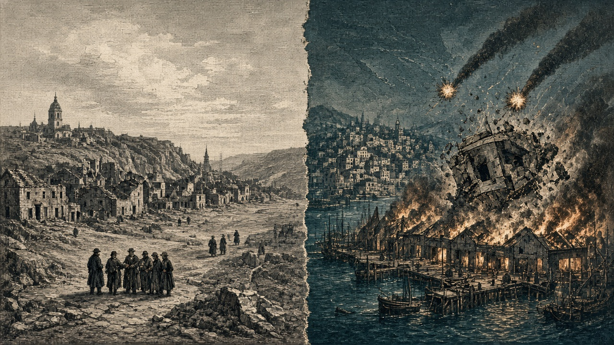

灰岩、第183期更新で滅亡へ 泰平が隣接施設に自爆装置
なのです、紅峰のミサイル基地と軍港を破壊
灰岩王国の人口は百人となり、首都の隣にある泰平の防衛施設は次期更新の終わりに爆発する なのですの艦砲は紅峰の現代都市を撃ち、ミサイル基地と軍港を累計三発で壊した

【総合部】灰岩王国の人口は第182期、百人まで落ちた。前期の三千百人から三千人減り、領土も四区画から三区画へ縮んだ。狐っ娘の尻尾教団は灰岩の村を占領し、前線では灰岩の歩兵を全滅させた。さらに泰平天国は、首都ロシュグリーズ（39,39）の隣にある防衛施設（39,40）へ自爆装置をセットした。装置は第183期更新の終わりに爆発し、周囲二区画を巻き込む。自爆には現代都市の人口保護が働かないため、残る百人は全員が被害を受け、灰岩は次期に滅びる。兵力一万四千百人が残っていても国の終わりは避けられない。詳報は4面、国特集は8面。
紅峰公国では、なのです主義人民共和国の艦砲が現代都市ホルンフェルトに命中し、人口は八千二百人から七千四百人へ減った。犠牲は八百人。砲弾はさらにミサイル基地を累計三発で破壊し、軍港も累計三発で破壊した。別の軍港にも一発が届いている。陸の公報損害は紅峰六千八百人、なのです千九百人。紅峰の兵力は四万千二百人。詳報は3面。
青海、金野に開戦 オリョルッルは桃谷の港を占領
青海共和国が金野伯爵領に開戦した。今期の青海は人口二十八万九千五百人、外洋航路八百四十一で世界一。中央ではオリョルッル王国が桃谷連邦共和国の港を占領し、桃谷から一万二千九百人があろあろ国へ移住した。詳報は2面・5面。